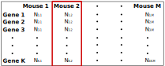

RNA-sequencing
Viktor Petukhov

- Немного биологии
- Bulk RNA-seq
- Bulk RNA-seq applications
- Single cell RNA-seq
- Pseudotemporal ordering


- Экспрессия генов - процесс преобразования наследственной информации гена в функциональный продукт (РНК или белок)
- Коэкспрессия (взаимная регуляция) - процесс, описывающий ситуацию, когда экспрессия одного гена влияет на экспрессю другого (повышая или понижая её)
- Транскрипция - построение РНК по ДНК (РНК -> ДНК)
- Трансляция - процесс синтеза белка (РНК -> белок)
- Экзоны - участки ДНК, копии которых составляют зрелую РНК
- Интроны - участки генов, которые вырезаются из pre-mRNA в процессе сплайсинга
- Дифференцировка - процесс "специализации" клетки


Medina et al. 2010. Babelomics: an integrative platform for the analysis of transcriptomics, proteomics and genomic data with advanced functional profiling. Nucleic Acids Research (Web Server issue).



РНК собирается со всех тканей:
- Усреднение по многим клеткам
- Гетерогенные области (например, мозг) анализировать нельзя


Гетерогенные популяции


*Itay Tirosh et al., Dissecting the multicellular ecosystem of metastatic melanoma by single-cell RNA-seq. Science 352, 189 (2016)
Поиск малых субпопуляций

*Malladi et al., 2016, Cell 165, 45–60 March 24, 2016
Нормализация
Дифф. экспрессия
Medina et al. 2010. Babelomics: an integrative platform for the analysis of transcriptomics, proteomics and genomic data with advanced functional profiling. Nucleic Acids Research (Web Server issue).
Взаимодействие генов


*Kumar P, et al., Understanding development and stem cells using single cell-based analyses of gene expression, Development (2017) 144, 17-32

1.3 миллиона клеток (mouse brain)
*https://support.10xgenomics.com/single-cell/datasets/1M_neurons